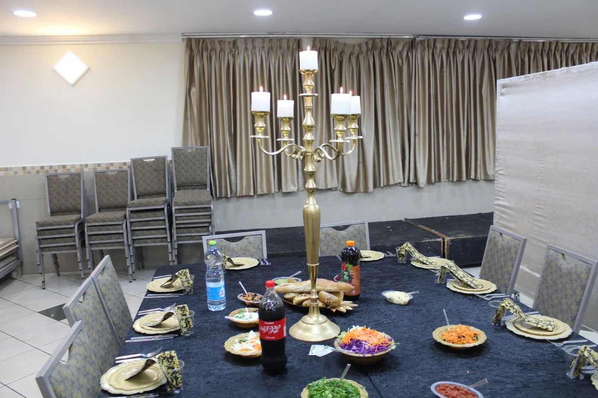
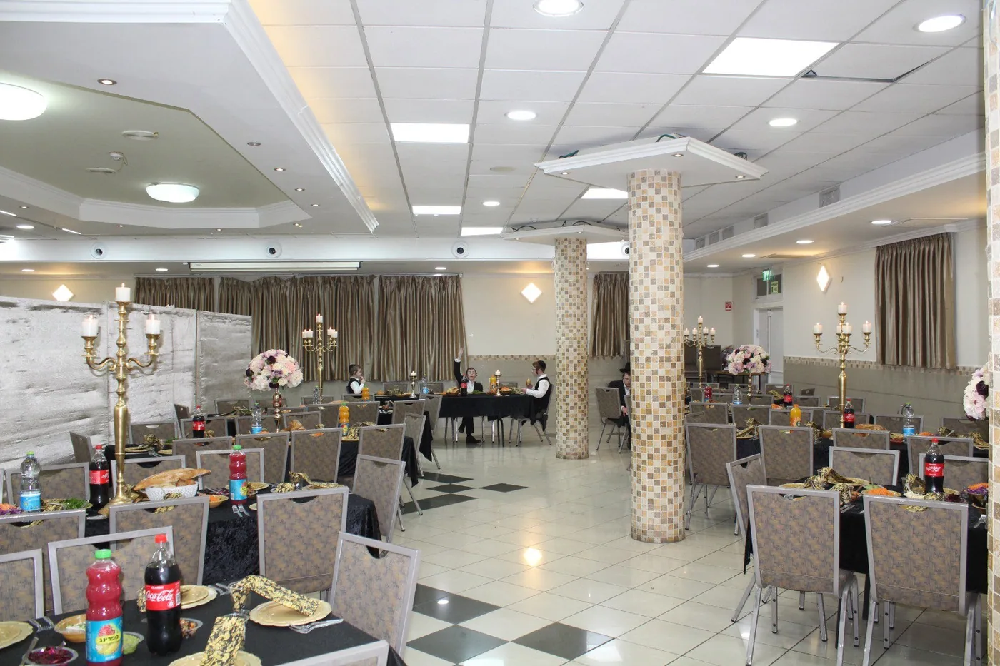
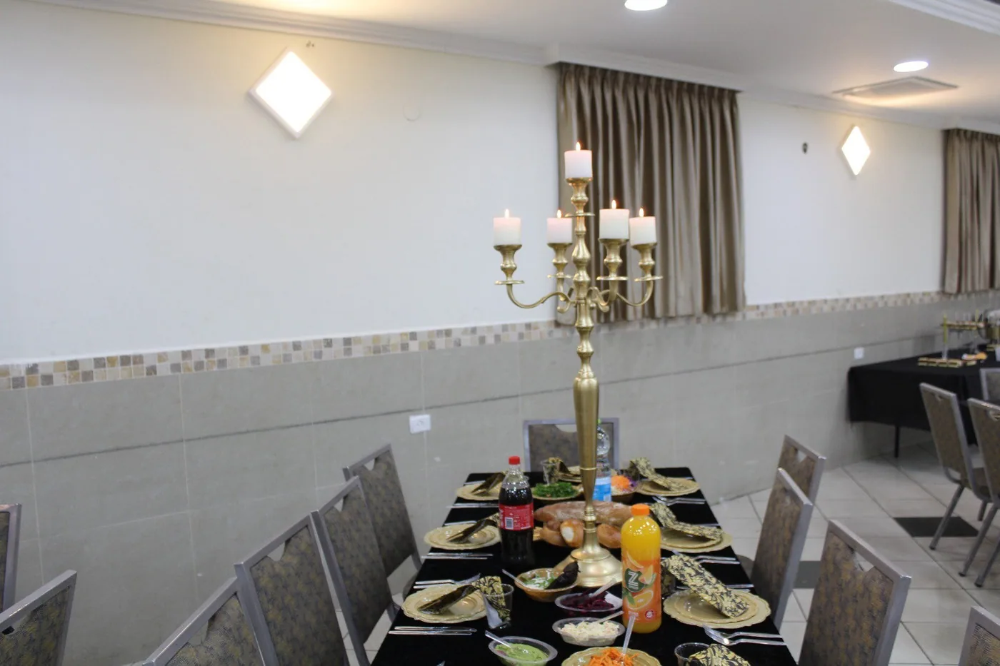
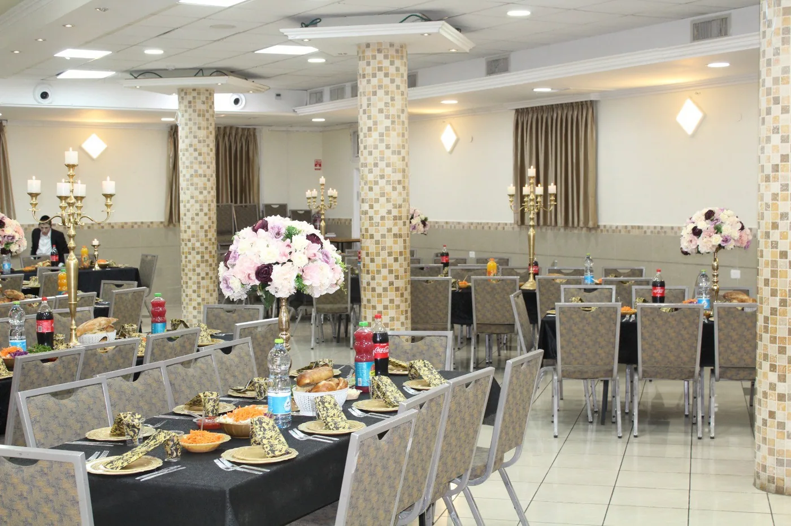
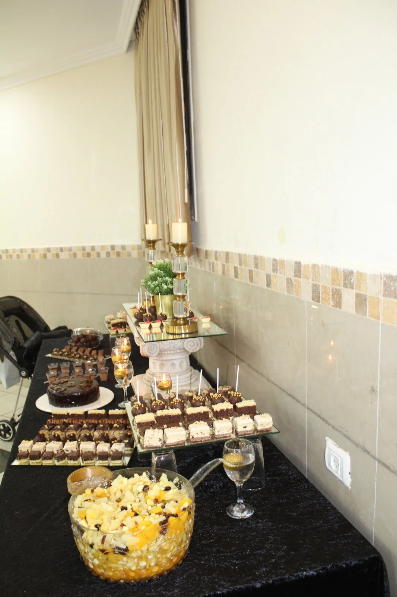

יש לנו דירות אירוח בקרית אתא מסביב לאולם שובו בנים.
שיכולים להכיל עד 50 אנשים.
כך שאם אתם עושים שבת חתן או בר מצווה תוכלו להביא 50 אנשים מחוץ לעיר, לכולם יהיה מקום לינה, ואת הסעודות תעשו באולם שובו שנים.
פירוט החלוקה:
לחץ על כל שם לראות אותו.
ישרים יעלוזו ברחוב חנקין (3 דקות מהאולם) - 20 מיטות.
דירה ברחוב נורדאו (מול האולם) - 10 מיטות
וילה ברחוב סוקולוב (4 דקות מהאולם) - 10 מיטות
דירה ברחוב סוקולוב (4 דקות מהאולם) - 6 מיטות
דירה ברחוב סוקולוב (4 דקות מהאולם) - 6 מיטות.
סה"כ 52 מיטות.
אולם שובו שנים





